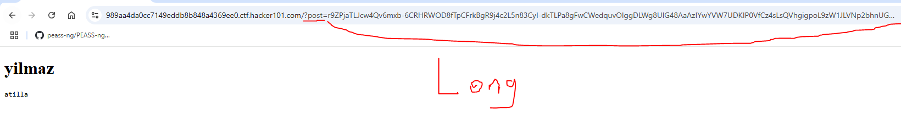
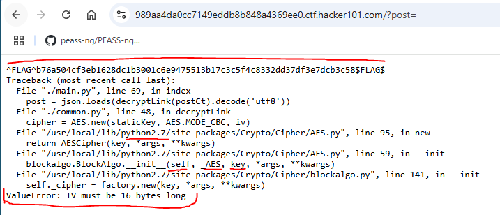
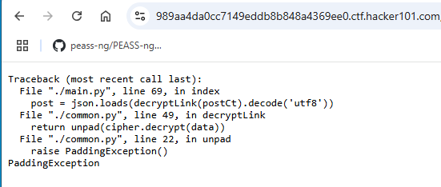
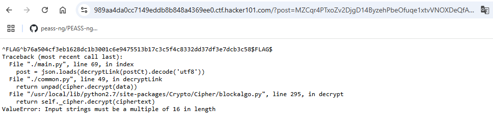
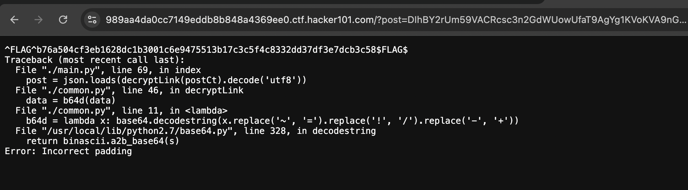
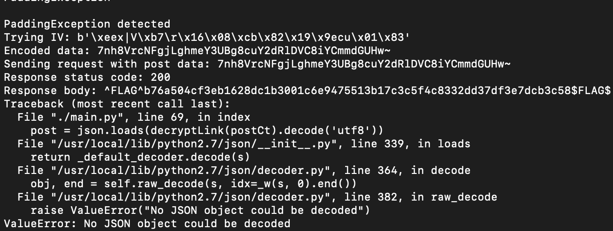
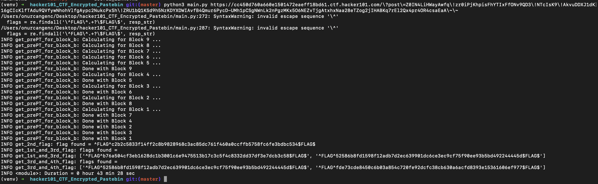

Hello everyone, today I would like to share my insights on hard level challenge called Encrypted Pastebin from Hacker101 platform.
Manipulating HTTP requests is sometimes beneficial especially when we do not detect anything on the web application surface. For the first solution, you can either use browser or Burpsuite.
Except the encryption algorithm information, there was not anything like XSS, Sensitive Data Exposure, IDOR and so on. That's why, I directly analyzed the HTTP requests instead of regular vulnerabilities.
It was interesting to see such an huge POST method variable in terms of its length. Instead of variable it seems like HASH or Encryption mechanism.
Let's check:
I initially send request with the title yilmaz and textarea as atilla.

It might not be seem clearly ,so I also added it as code part:
r9ZPjaTLJcw4Qv6mxb-6CRHRWOD8fTpCFrkBgR9j4c2L5n83CyI-dkTLPa8gFwCWedquvOIggDLWg8UIG48AaAzIYwYVW7UDKIP0VfCz4sLsQVhgigpoL9zW1JLVNp2bhnUG-hzRLy!ZHvtN5ooBTMcGjKGV!TbZkSu26WOkpOOqWENzJKpB2i-8DX5fQTNFhNTnR8evPZ4q1i5HUTsV7g~~
I have never seen such thing like that. However, in the main page, application told that I was dealing with AES128 military graded algorithm on the default path.
Observe that the application protected by AES128 ,so it was tough to bypass or access unrestricted endpoints, parts and so on... Meanwhile, I decided to play with the ?POST= parameter to see the reaction of the application. Therefore, I replaced this huge encrypted parameter to empty string.
https://989aa4da0cc7149eddb8b848a4369ee0.ctf.hacker101.com/?post=
The application crashed and prompted a couple of error messages resembles as python compiler errors.

Most probably application is using flask because of the application's hierarchy. For example, main.py running the default application and common.py is liable for the encryption program in the backend. We cannot still decide on framework ,but the highest prediction for the Flask.
When I changed latest letter or any number (byte) application also crashed itself.
For instance:
/?post=MZCqr4PTxoZv2DjgD14ByzehPbeOfuqe1xtvVNOXDeQfA-J1Iy82t7I0kMkq7ksiZ3GhR-1!elskyRNNcAFlSMSpE8ZN7ozPIhxwUcUyGcSkb23!D8Rexldw8P!NvyJCAgAZBlGqL1PcIcdT0QaEIjC9t67S2pphrM9WKJKOdI0S9OJ5MU1QvjTz4fY7QD1fLAhE3wZ13PircDmfVBM1Ba~~
I altered w to a in this scenario then I encountered application flaw:

After that I noticed that post variable using such a conversion:
post = json.loads(decryptLink(postCt).decode('utf8'))
Trying a couple of variations might be useful to get other types of error:
GOTCHA ! ! !

When you try to exceed the length of the full encrypted deserialization operation, you also find flaw on the application:
In my session, I tried 17 length payload for $post string.
MZCqr4PTxoZv2DjgD14ByzehPbeOfuqe1xtvVNOXDeQfA-J1Iy82t7I0kMkq7ksiZ3GhR-1!elskyRNNcAFlSMSpE8ZN7ozPIhxwUcUyGcSkb23!D8Rexldw8P!NvyJCAgAZBlGqL1PcIcdT0QaEIjC9t67S2pphrM9WKJKOdI0S9OJ5MU1QvjTz4fY7QD1fLAhE3wZ13PircDmfVBM1Baa~~
Observe that I added second a letter to exceed payload length, needs to pass 16 length in total.
Do not consider about this payload because it is applying deserialization.
Most probably, decryptLink() method trying to decrypt the postCt coming from different section of the application. Plus, it initiates to UTF8 decoding operation. Raising PaddingException(). Therefore, it is suitable to search for PaddingException thing and json conversion category:
Since I got successfully crash the target, I will try all the alphabet against the application.
Results:

It is clear that there are also matching values specifically upper case letters. This means that what if I match different character set on entire encrypted thing. Since it will be complex, I decided to search for this especially the PaddingException.
After couple of hours, there was a page indicating padding oracle attack vector. Therefore, I decided to implement this approach presented on the page.
On this page there was a python script that handles the cryptographic operations. However, our application running on web ,so I immediately customize the script:
Detect Padding Exceptions
import requests
def oracle(iv, ct): response = requests.post("https://989aa4da0cc7149eddb8b848a4369ee0.ctf.hacker101.com/?post=RHAgDiavHF5VVy-uR0bdS6HxTnZ66adcSVL0EMr5Sr24JdHjNOcJcvexjeQB86GtGUeHyk4iqVjHSxGfjQAh3wkvleSkARGJEHbNit23mKmA15LJm-C0XDD2GXJUg-BRXuBM3zTRam4GzI4ptKVk7ryUEZkcQHvEEdxso6GVR9XSDb92Q7JSZOpmbhtnr4vbmCvgHvg085r5mOnXtGkoGb~~", data={"iv": iv, "ct": ct}) if "PaddingException" in response.text: return False return True
,but I could not successfully handle the script. Instead, I found the logic behind the algorithm then found a script against specifically for this implementation.

Special characters (~, !, -) are replaced to form a standard Base64 string. However, this might not fully fix the string's formatting issues.
b64d = lambda x: base64.decodestring(x.replace('~', '=').replace('!', '/').replace('-', '+'))
I found a customized script, useful to solve this question on github:
When you run the script it will ask many libraries including base64 and requests. You can easily create virtual environment to make your script for one time usage then delete the virtual environment:
python -m venv venv
pip install requests
Since base64 is a built in library, you do not need to install it.
After I configured successfully and waited for almost 1-2 hours. I got the result on the prompt.
The script tries to byte-to-byte fuzzing ,so it may take long time to achieve the operation. Furthermore, due to the HTTP request's latency it also demand great network to complete the operation.

Notice: it was the first flag ,so we have to find other ways to achieve flag 2.
After my couple of scripting attempts, finally, I discovered a script, automatically captures all the flags on the machine. Except the 1-2 flags, I successfully compromised others through the help of GitHub script.
You can reach out the script from here:
hacker101CTFEncrypted_Pastebin
With the help of the script, you can get ALL THE FLAGS located on the target.
Let me show you how to install & use it:
First of all, in order to run the script without any errors, you should install required libraries provided by script. Even though all the libraries are built-in in Python, requests library needs to further installation. You can select virtualization method or direct installation. Direct installation means that it will be always in your OS's default library lists.
If you want to check all the built-in libraries & understand the external modules check the manual:
Python Standard Library Manual
I highly recommend you to use virtualization since by virtualizing the environment, entire packages will be temporarily stored on the virtual environment. Furthermore, if you encounter any issues when you decide on install as system environment, it may lead to complex issues regarding to kernel.
1) Create Virtual Environment
python -m ven venv
2) Install Dependencies
pip install requests
3) Learn The Execution Pattern of The Script
Direct run is possible or you can benefit from the resource where you get the script. Plus source code will aid you to usage of the script.
python3 [URL_GENERATED_BY_INSTANCE]
4) Run The Script as Expected
python3 main.py https://cc450d760a660e1501472eaeff18bd61.ctf.hacker101.com/?post=Z0IN4LiHWayAwfq!zr0iPjKhpisFhYTIxFfONv9QD3!NTcIsK9!AkvuDDXJ1dK16gCIcKlfTAdu9QVfywNhohVlfgAypc2NukcPxSh!ZRU1bQ1KSd9h5NzKDYXDWIAvfB4Qmur6PycD-UMh1pCSgNWnLk2nPgzMKx5O6NEZvTjgAtxhxNaa28eTZog2jIHABKq7rEl2Qx4pr4OR4csaEaA~~
5) Press Enter (fire) ! ! !

After you run the scripts, you should check whether it executed itself as expected or not by using the source of the script.
May The Pentest Be With You ! ! !